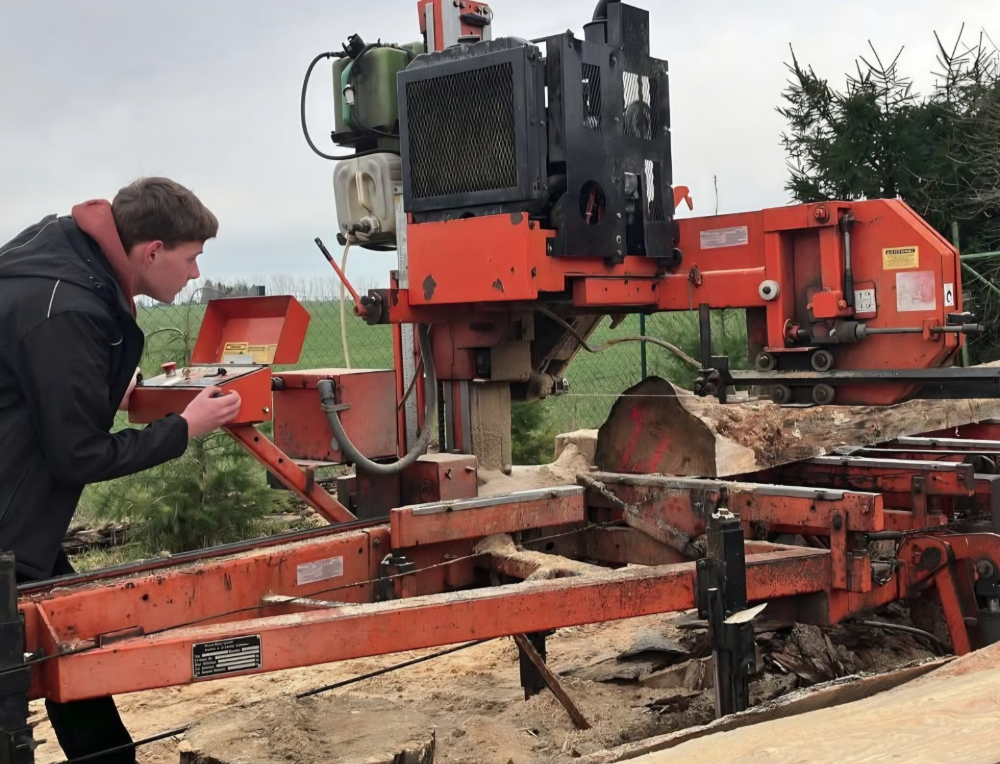

Der Betrieb
Über mich

Holzverarbeitung Köppen
Handwerk, Eigeninitiative und Leidenschaft für Holz
Mein Name ist Chris Köppen. Mit der Holzverarbeitung Köppen biete ich in Teschendorf bei Burg Stargard regionale Holzverarbeitung vom Stamm bis zum fertigen Bauholz an.
Im Mittelpunkt stehen persönliche Absprachen, flexible Lösungen und ein ehrlicher Umgang mit dem natürlichen Werkstoff Holz. Ob Bauholz, Bohlen, Lohnschnitt, Tischplatten oder Weiterbearbeitung: Jeder Auftrag wird passend zum Projekt abgestimmt.
Mehr über den Weg in die Selbstständigkeit und zum eigenen Sägewerk findest du auch im verlinkten Nordkurier-Artikel auf der Startseite.
Projekt anfragen